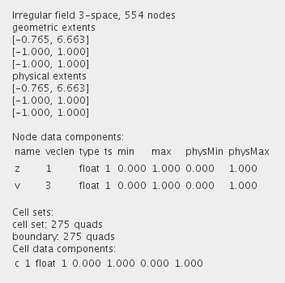
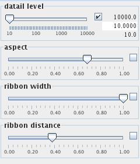

TEST QUAD MESH
The module provides an example of 3D quad mesh scalar and vector field dataset.
Output data
The output fields are irregular 3-space.

Computation parameters

The user defines the number of quad elements in the detail level slider, the aspect ratio of the output ribbons in the aspect slider, the ribbon width in the ribbon width slider and the distance of one ribbon from another in the ribbon distance slider using either the slider or the text fields for minimum, maximum and current value on the right hand side of the slider, if the check box is on.
Presentation parameters
Presentation parameters are described in the common interfaces section under the Presentation Panel entry.